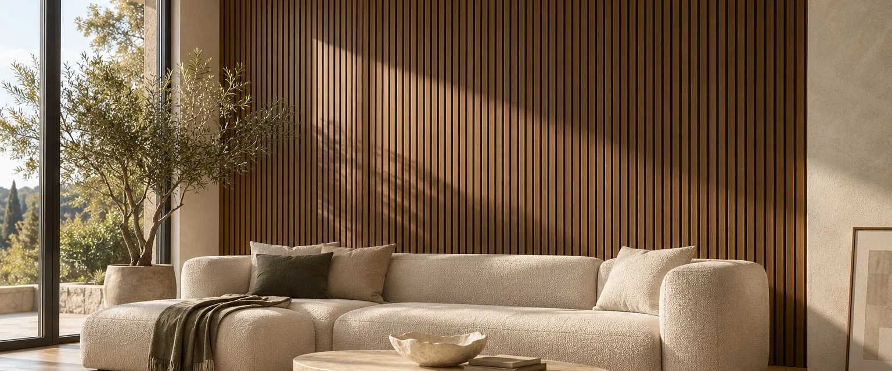

MATERIALES + ASESORAMIENTO
Elegir bien
cambia todo.
Revestimientos que le dan carácter a tu espacio. Te acompañamos a encontrar los que tu proyecto necesita.
Explorá los materiales ↗Hablemos de tu proyecto →Atención virtual · Muestras a coordinar

Texturas que se sienten.Materiales que transforman.Decisiones con asesoramiento.
BUSCÁ POR PRODUCTO
¿Qué material buscás?
O explorá por tipo de producto
PRODUCTOS
Diseños para tu proyecto.
¿NO SABÉS CUÁL ELEGIR?
Mandanos una foto y las medidas.
CERCA DE TU PROYECTO
La textura también
se elige en persona.
Te atendemos de forma virtual y coordinamos encuentros con muestras en Puerto Madryn. Contanos qué buscás y vemos juntos las opciones para tu espacio.
Coordinar muestras ↗